“Buď to budeš milovat, nebo nenávidět!”
Video Review
Buď to budeš milovat, nebo nenávidět. Nic mezi tím. No Rest for the Wicked se ani vzdáleně nepodobá tomu, co si většina lidí představí pod zkratkou ARPG. Nečekej další Diablo, ale zároveň ani další Souls-like. Tenhle hybrid si bere kousky z různých žánrů a skládá z nich něco vlastního. A je potřeba říct, že ne každému to sedne.
Pokud ti ale nevadí časté umírání, backtracking a neustálé hledání skrytých cest, jsi tady správně. Od 18. dubna šlo hru koupit v předběžném přístupu na PC za 35 eur. Moon Studios přesně tenhle typ zážitků umí. Udělali hru, která ti nic nedá zadarmo, ale odměna za vytrvalost je královská. Kdo vydrží, tomu se postupně otevře hromada mechanik, bohatý svět plný detailů, unikátní postavy i dramatický příběh. Otázka je, jestli je všechno opravdu tak růžové, nebo jen sledujeme další přehajpovaný titul. Hru jsem koupil hned při vydání a společně s ViktorBrenek jsme ji pořádně otestovali na YouTube i následně na Twitchi.
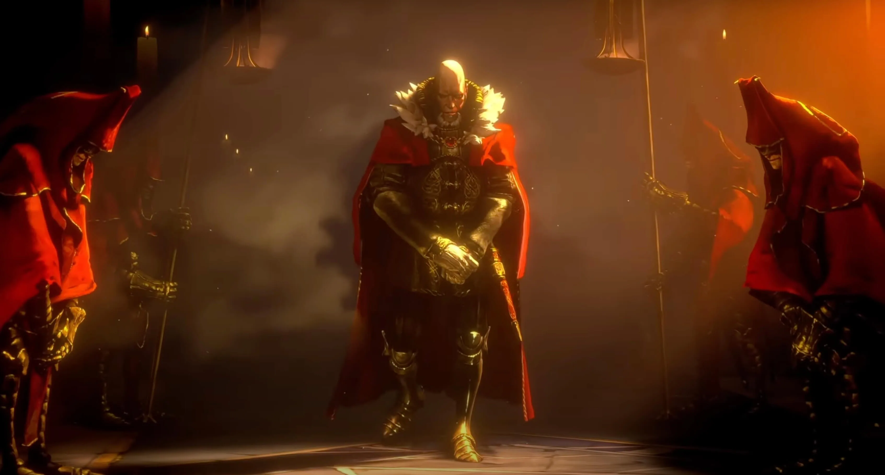
“Pokud čekáš perfektní optimalizaci už teď, radši si ušetři nervy.”
První, čeho si většina lidí všimne, je stylizace. Pro někoho je nádherná, pro jiného přeplácaná. Recenze se v tom dost rozcházejí. Jedna věc se ale Moon Studios upřít nedá: svět drží pohromadě. Nenajdeš tu odfláknuté assety ani opakující se modely. Všechno má vlastní patinu, charakter a rukopis. Tahy štětce jsou vidět úplně všude, včetně efektů jako voda, kouř nebo oheň. Po pár hodinách hraní máš skoro pocit, že ten vizuál leze přímo z monitoru.
Jenže optimalizace je mizerná a hra na tom dost trpí. Nastavení grafiky prakticky nic moc neřeší. I na poměrně slušné sestavě s 6700XT se sotva držíš kolem 60 FPS a při cutscénách to padá i pod 30. Je fér dodat, že hra je stále v early access, takže pokud očekáváš vyladěný produkt, bude lepší dát vývojářům ještě čas.
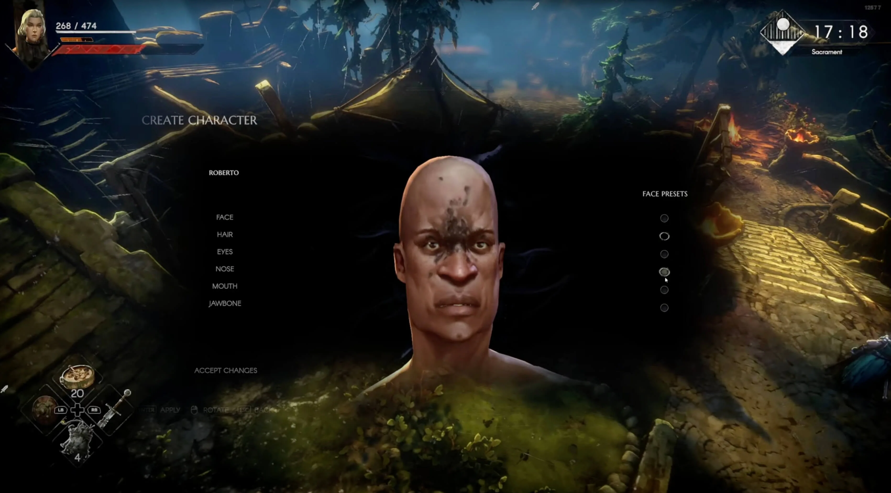
“Právě itemizace ti dovolí dělat opravdu hodně.”
To ale neznamená, že hra už teď nenabízí dost zábavy. Mechanik je v ní totiž opravdu hodně. Soubojový systém stojí i na samotných animacích, které je potřeba naučit číst a ovládat, včetně perfektních parry a dodge. V boji je i stagger systém, který počítá blokované zásahy a po určité době vychýlí tebe nebo nepřítele, podobně jako v Souls hrách.
Najdeš tu klasické zdraví doplňované jídlem, které si musíš vyrábět, a focus, tedy něco jako mana, která se obnovuje úspěšnými zásahy. Ta pak slouží k sesílání run, které obohacují combat o další schopnosti. Runy můžeš zasazovat do zbraní ve městě podle rarity itemů, takže se hra v tomhle směru blíží klasickým ARPG.
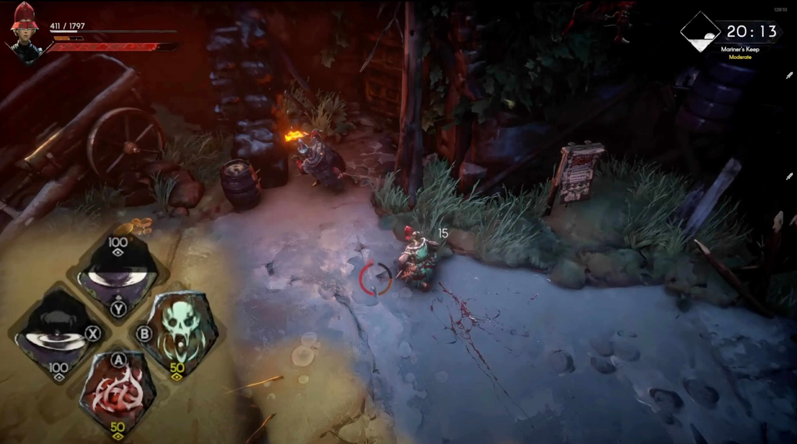
Jsou tu i tradiční rarity od bílých po legendární předměty. Bílé itemy bývají nejflexibilnější pro úpravy, ale nemají bonusové affixy. Magické předměty, které získáš enchantováním, jsou něco mezi. Do itemů můžeš vkládat i infusion gemy podobně jako třeba v Diablu IV. Různé typy equipu mají různé efekty i sílu a celé je to zpracované opravdu dobře.
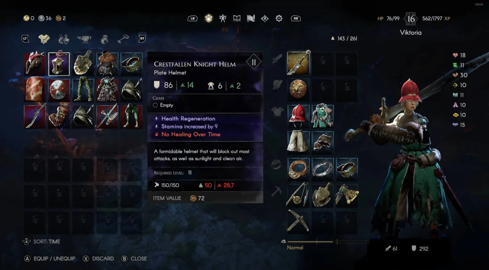
Na první pohled poznáš, jestli tě item posílí nebo naopak omezí. A skoro vždy s tím můžeš něco udělat. Často tě ale omezují primární atributy, které jsou klíčové pro nošení lepších věcí i pro růst postavy. Každý level dostaneš tři body a rozhoduješ se, kam je investuješ. I když loot padá náhodně, hra jde dohrát i s obyčejným bílým equipem. Alespoň v prvním aktu, kde early access kampaň zatím končí.
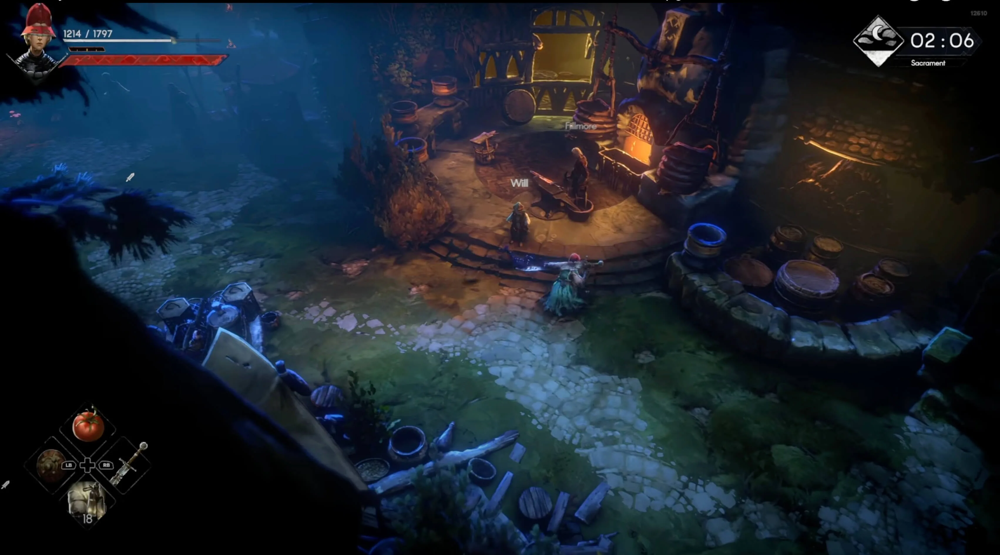
“Hra momentálně nabízí zhruba 15 hodin kampaně.”
Celkově teď hra nabízí zhruba patnáct hodin kampaně. K tomu se ale přidávají další systémy a něco jako endgame. No Rest to řeší několika mechanikami a vývojáři už naznačili, že to rozhodně není konečný stav.
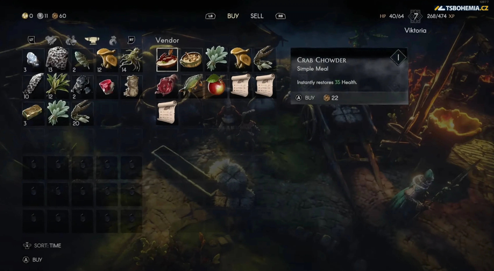
Funguje tu automatický systém obnovy dříve vyčištěných lokací. Když se do nich vrátíš, narazíš na jiné nepřátele, loot i menší výzvy, které si můžeš brát znovu ve městě jako denní nebo týdenní úkoly. Ty se dělí třeba na sběratelské nebo bojové challenge. I když by to časem mohlo unavovat, zatím to funguje překvapivě dobře.
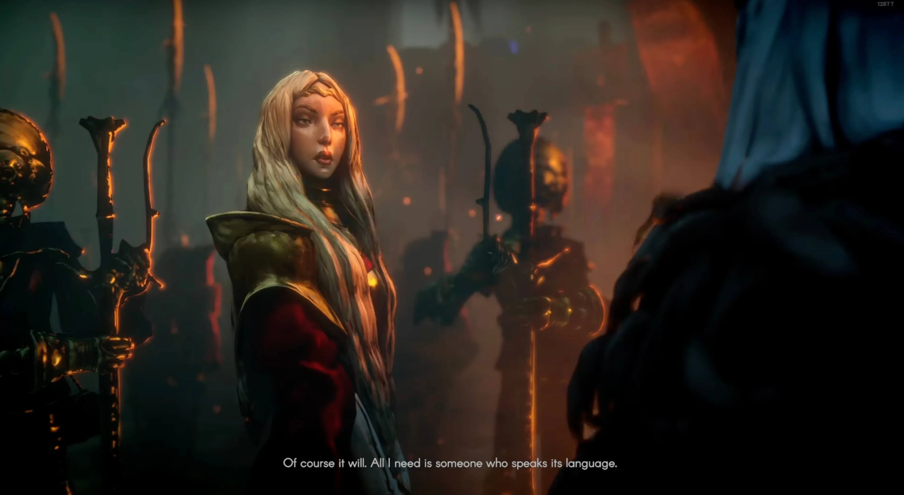
S každým poraženým bossem navíc sílí i monstra ve starších lokacích. Hra tak reaguje na progres hráče. A i když by se mohlo zdát, že tenhle systém moc nevyužiješ, opak je pravdou. Neustále se vracíš kvůli hlavní story, vedlejším úkolům, novým cestám i surovinám. Ty pak využíváš třeba na craft, vybavení nebo opravu města, což je další mechanika schopná spolknout spoustu hodin. Město je prakticky v ruinách a jeho obnova probíhá v reálném čase. Každá opravená budova otevírá nové možnosti, obchodníky nebo lepší pohyb po městě. Po kampani se pak navíc odemkne i housing systém.
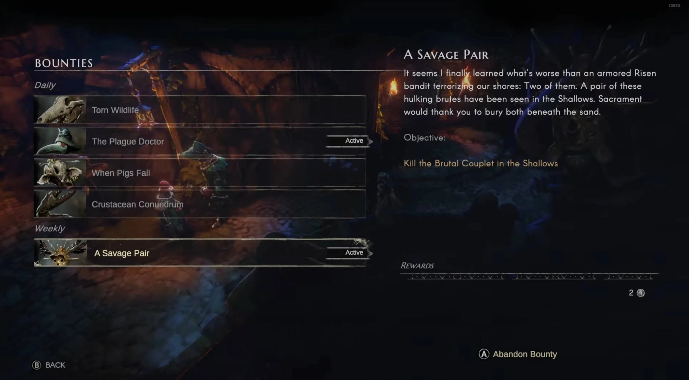
Aby toho nebylo málo, po dokončení kampaně odemkneš i challenge mise z hřbitova. Ty tě pošlou do náhodně generovaných dungeonů o více patrech a smrt tě vrací zpět na začátek. Aktuálně je tam pět úrovní a i s postavou kolem dvacátého levelu je to pořád dost drsné. Pokud tě baví horizontální progres a min-maxing, máš tu další velký cíl.
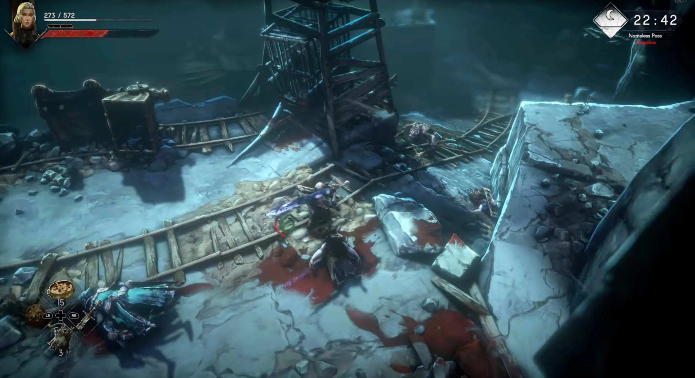
“Ale ne všechno je pozitivní.”
Je tu spousta detailů, které jsem ještě ani nezmínil. Hra tě odměňuje za porážení bossů, rozšiřování inventáře, housing, farmení materiálů i za obyčejné objevování koutů mapy. Jenže skoro všechno, co hra dělá dobře, má zároveň i své „ale“.
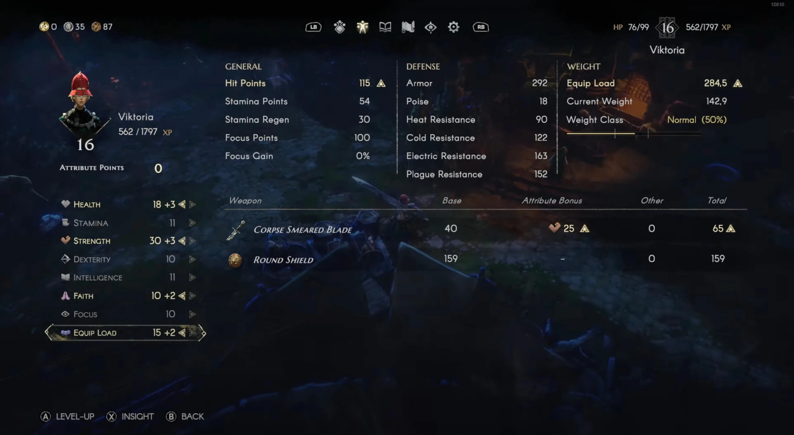
Systém odměn totiž často nahrazuje quality of life. Prvních deset hodin tak dost trpíš. Lokace jsou dlouhé, jídla máš málo, takže hodně umíráš a běháš dlouhé trasy znovu. Ve městě je to podobné, neustále řešíš, jak se dostat k domu nebo kde přesně stojí konkrétní NPC. Inventář se také rozšiřuje až později, takže na začátku pořád taháš věci, které vlastně nepotřebuješ jen proto, že něco lepšího leží na zemi.
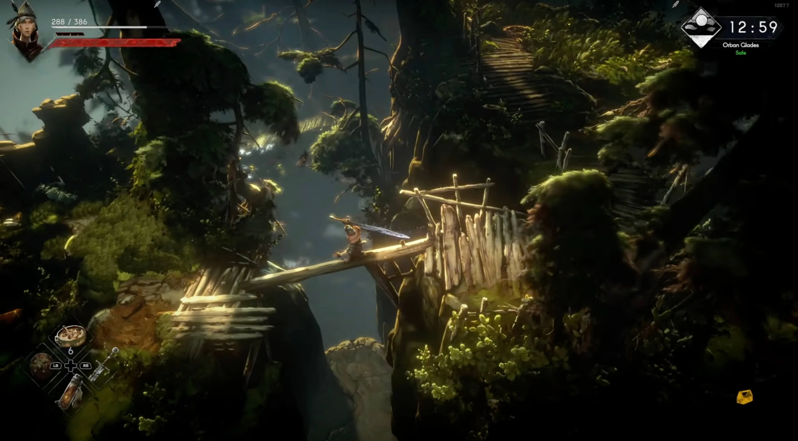
“Často jen škrtneš o pixel a letíš dolů.”
Myslím si také, že spoustě hráčů nemusí sedět systém neustálého vracení do starých lokací. Navíc se nemůžeš teleportovat jinam než k poslednímu whisperu, což funguje jako bonfire v Souls hrách. Hodně se tedy nachodíš. Samo o sobě by to nevadilo, jenže lokace jsou často plné klád a úzkých míst, kde musíš balancovat. Často stačí drbnout o pixel, spadneš dolů, nebo ti dojde stamina ve vodě a máš smůlu. Hra navíc taková rizika přímo podporuje, protože tajné cesty bývají ukryté právě na podobných místech.
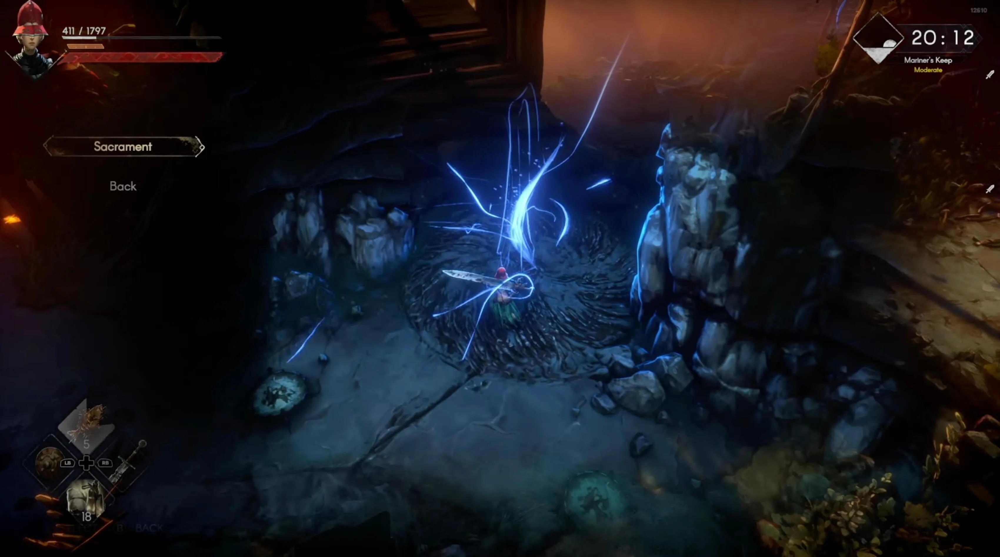
Vývojáři sice ekonomiku postupně upravují v hotfixech, ale ani tak se hra nevyhnula tvrdé kritice. Někteří hráči byli nucení zakládat nové postavy jen proto, že neměli peníze na opravy. Bugy se vyskytují, ale osobně jsem jich zatím nezažil moc. Zamrzí mě spíš dočasná absence multiplayeru a krátká kampaň. To ale není ani tak kritika jako konstatování. Skutečný problém je chybějící možnost přemapování kláves, kvůli které je hra bez controlleru prakticky nehratelná.
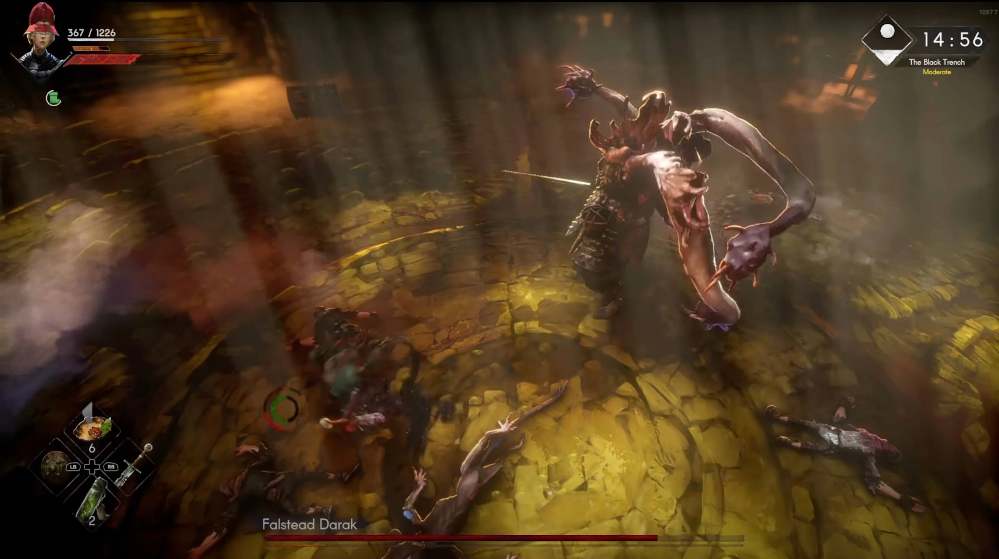
“Pokud hledáš hru na víkend, máš se na co těšit.”
Takže jaký je závěr? Hra mě baví. Mám v ní přes 16 hodin, level 19, ale moje pocity jsou smíšené. Na jednu stranu jsem dlouho neseděl deset hodin v kuse u jedné hry během jediného dne. Pokud No Rest něco umí, tak je to pocit neustálého progresu a odměňování za další překonaný krok. Na druhou stranu jsem už dlouho nebyl u hry tak frustrovaný.
Doporučil bych ji každému, kdo dokáže přejít všechny zmíněné problémy. Je to velmi povedený projekt a v některých momentech na mě působí, jako bych znovu poprvé hrál Trine, Fable nebo Elden Ring. V mnoha ohledech je opravdu svěží. Zároveň ale i výbornou hru může zadusit špatný balance, výkon, quality of life a absence dlouhodobého vertikálního obsahu. Na to budou vývojáři potřebovat ještě hodně času. Pokud tedy hledáš hru na víkend, určitě se máš na co těšit. Cenovka 35 eur mi přijde v pořádku. Ale zatím to pořád působí spíš jako demo s velkým příslibem než jako hotová věc.
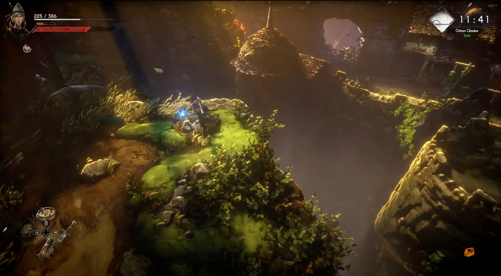